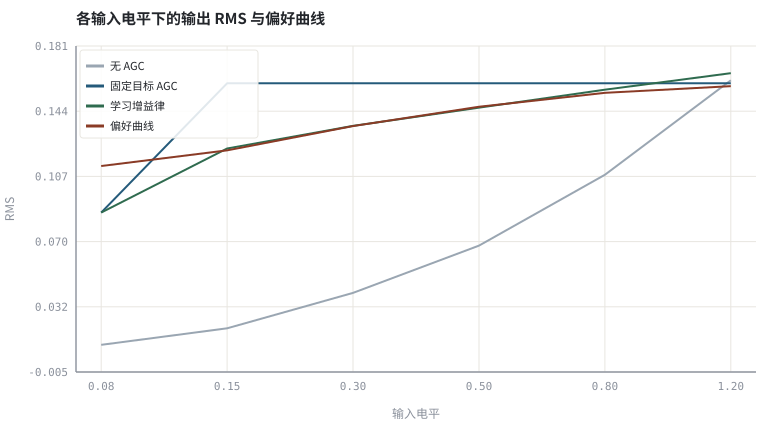
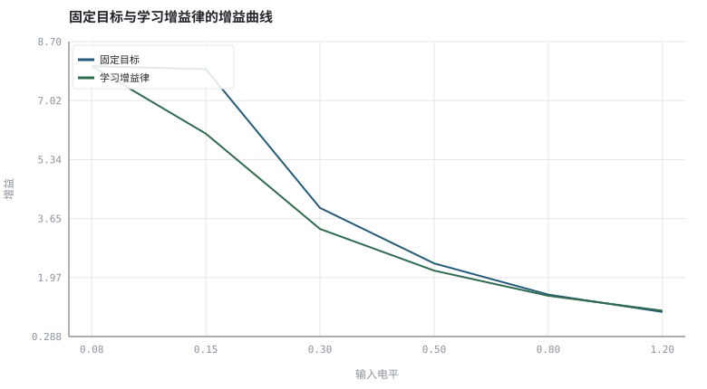

第 25 章神经增益控制与感知响度
把 AGC 的固定目标电平换成从数据里学出来的一条增益律。
本章位置：第 24 章 · 神经 AEC 与回声/噪声联合抑制 学残余抑制，本章学增益，第 26 章 · 联合 3A：多任务、级联与端到端建模 把 AEC / ANS / AGC 三个目标合并；第 28 章 · 延迟预算与 RTF：实时链路账本 会把这些模块的延迟一起算进预算。
学习 AGC 是把控制器里的常数 L_target 换成一个查表/回归函数；执行层仍是一阶平滑 + 钳位 + 限幅，网络只负责给目标值。
- 能把 AGC 写成「输入电平 → 增益」的可学习映射。
- 能说明感知响度目标与 RMS 目标的区别。
- 能用最小二乘拟合一条增益律并在留出电平上验证。
- 能解释为什么工业系统仍保留传统 AGC 与限幅器。
§知识点地图
每个知识点都配了 1～2 个扩展学习链接；本章完整资源清单见 扩展学习。
| # | 知识点 | 扩展学习 | 状态 |
|---|---|---|---|
| 1 | 电平到增益的映射 | Automatic gain control ↗ · ffmpeg dynaudnorm ↗ | 正文已覆盖 |
| 2 | 感知偏好数据 | Microsoft DNS Challenge ↗ · LibriSpeech ↗ | 正文已覆盖 |
| 3 | 对数域最小二乘 | ffmpeg loudnorm ↗ · EBU R128 ↗ | 正文已覆盖 |
| 4 | 响度与 RMS 目标 | EBU R128 ↗ · ffmpeg loudnorm ↗ | 正文已覆盖 |
| 5 | 增益约束与钳位 | Automatic gain control ↗ · ffmpeg dynaudnorm ↗ | 正文已覆盖 |
| 6 | 留出电平验证 | ffmpeg loudnorm ↗ · EBU R128 ↗ | 正文已覆盖 |
| 7 | 混合部署 | ONNX Runtime ↗ · RNNoise ↗ | 正文已覆盖 |
| 8 | 增益泵浦 | Automatic gain control ↗ · ffmpeg dynaudnorm ↗ | 正文已覆盖 |
§25.1AGC 其实是一维回归
g = f_θ(L_in) ，传统: f = L_target / L_in ；学习: log g = a·log L_in + b
第 14 章 · AGC：包络跟踪、攻击释放、限幅与响度 的 AGC 把目标电平写死成一个常数 L_target。但真实偏好随内容与输入电平变化：轻声说话时希望多抬一点，响亮段落则宁可少抬以避免背景噪声被放大。把它看成一维回归，就能从标注了偏好响度的数据里拟合 f_θ。
| 方案 | 目标 | 优点 | 风险 |
|---|---|---|---|
| 无 AGC | 保持原样 | 零失真 | 电平起伏大 |
| 固定目标 AGC | 恒到 L_target | 简单可证明 | 弱段底噪被抬起 |
| 学习增益律 | 拟合偏好曲线 | 听感更自然 | 需要标注、分布外可能失控 |
| 传统 + 神经混合 | 神经给目标、传统做环路 | 平滑、有安全边界 | 两套状态需同步 |
§25.2安全边界比拟合精度更重要
- 钳位：增益必须限制在
[g_min, g_max]，否则分布外输入会直接把信号推到削波。 - 平滑：网络逐帧给的目标仍要经过攻击/释放一阶平滑，避免增益跳变（第 14 章 · AGC：包络跟踪、攻击释放、限幅与响度）。
- 限幅：最后一级必须是确定性限幅器，不能交给网络兜底。
- 评测：同时报响度偏差、峰值余量与语音失真，只用 LUFS 会奖励把一切都压到同一响度。
本实验用一条人为设定的偏好曲线生成标注，再用对数域最小二乘拟合两参数模型，并在未参与拟合的电平上验证。它演示的是「可学习增益律」的机制，不是任何产品的听感数据。
§Python 实验
实验 25-1 · 拟合增益律并在留出电平上比较三种 AGC
#!/usr/bin/env python3
# -*- coding: utf-8 -*-
"""用合成偏好响度拟合对数域增益律，比较无 AGC、固定目标与学习增益律的响度偏差。
全部语音 / 噪声 / 房间冲激响应均为代码合成信号，仅用于教学演示机制与量级。
"""
from __future__ import annotations
import math
import pathlib
import random
import statistics
import sys
import time
_here = pathlib.Path(__file__).resolve()
for _p in _here.parents:
if (_p / "tools" / "dsp.py").exists():
sys.path.insert(0, str(_p / "tools"))
break
from dsp import (SAMPLE_RATE, fft, hann, stft, istft, magnitude_db, spectrum,
white_noise, tone, chirp, synthetic_speech, rir, convolve,
fft_convolve, delay, clip, normalize_peak, rms, rolling_rms,
smooth, db, energy_db, snr_db, erle_db, seg_snr_db,
scale_align, si_sdr_db, lufs_approx,
write_wav, read_wav, wav_info)
from chart import Chart, heatmap, BLUE, RED, GREEN, AMBER
FIG = _here.parents[1] / "fig"
AUDIO = _here.parents[1] / "audio"
FIG.mkdir(exist_ok=True)
AUDIO.mkdir(exist_ok=True)
random.seed(7)
# ---- 参数区 ----
N = 4000
LEVELS = (0.08, 0.15, 0.30, 0.50, 0.80, 1.20)
TRAIN_N = 4 # 前 4 个电平用于拟合，后 2 个留出验证
FIXED_TARGET = 0.16
G_MIN, G_MAX = 0.20, 8.0
# ---- 计算与作图 ----
rng = random.Random(7)
base = synthetic_speech(rng, N)
def pref(level):
return 0.10 + 0.06 * (1.0 - math.exp(-3.0 * level))
signals = [(L, [L * base[i] for i in range(N)]) for L in LEVELS]
xs, ys = [], []
for L, x in signals[:TRAIN_N]:
r = rms(x) + 1e-9
xs.append(math.log10(r))
ys.append(math.log10(pref(L) / r))
mx, my = sum(xs) / len(xs), sum(ys) / len(ys)
var = sum((v - mx) ** 2 for v in xs)
cov = sum((xs[i] - mx) * (ys[i] - my) for i in range(len(xs)))
a = cov / (var + 1e-12)
b = my - a * mx
rows = []
for L, x in signals:
r = rms(x) + 1e-9
gains = [1.0, min(G_MAX, FIXED_TARGET / r),
max(G_MIN, min(G_MAX, 10 ** (a * math.log10(r) + b)))]
outs = [clip([v * g for v in x]) for g in gains]
rows.append((L, [rms(o) for o in outs], gains, outs, pref(L)))
c = Chart(FIG / "25-levels.svg", "各输入电平下的输出 RMS 与偏好曲线",
xlabel="输入电平", ylabel="RMS", xticks=[(i, "%.2f" % L) for i, L in enumerate(LEVELS)])
c.line(range(len(LEVELS)), [r[1][0] for r in rows], "#9aa6b2", label="无 AGC")
c.line(range(len(LEVELS)), [r[1][1] for r in rows], BLUE, label="固定目标 AGC")
c.line(range(len(LEVELS)), [r[1][2] for r in rows], GREEN, label="学习增益律")
c.line(range(len(LEVELS)), [r[4] for r in rows], RED, label="偏好曲线")
print("电平图:", c.save())
g = Chart(FIG / "25-gains.svg", "固定目标与学习增益律的增益曲线",
xlabel="输入电平", ylabel="增益", xticks=[(i, "%.2f" % L) for i, L in enumerate(LEVELS)])
g.line(range(len(LEVELS)), [r[2][1] for r in rows], BLUE, label="固定目标")
g.line(range(len(LEVELS)), [r[2][2] for r in rows], GREEN, label="学习增益律")
print("增益图:", g.save())
write_wav(AUDIO / "25-quiet.wav", normalize_peak(signals[0][1]))
write_wav(AUDIO / "25-learned.wav", rows[0][3][2])
mae = [sum(abs(r[1][m] - r[4]) for r in rows) / len(rows) for m in range(3)]
held = [sum(abs(r[1][m] - r[4]) for r in rows[TRAIN_N:]) / (len(rows) - TRAIN_N) for m in range(3)]
clips = sum(1 for r in rows for v in r[3][2] if abs(v) >= 0.999)
print("拟合: log g = %.3f * log L_in + %.3f | 训练电平=%d 留出=%d" % (a, b, TRAIN_N, len(LEVELS) - TRAIN_N))
print("响度偏差 MAE 无AGC=%.4f 固定=%.4f 学习=%.4f | 留出集: %.4f/%.4f/%.4f" %
(mae[0], mae[1], mae[2], held[0], held[1], held[2]))
print("学习增益钳位样本=%d | SAMPLE_RATE=%d | 偏好曲线为人为设定" % (clips, SAMPLE_RATE))操作：对照留出电平上的响度偏差；把 TRAIN_N 改成 2 观察外推误差。 预期与判读：学习增益律在训练区间内明显更贴近偏好曲线；但在未参与拟合的电平上，两参数模型的外推误差可能反超固定目标 AGC（本例留出集即是如此）。这正说明留出验证、增益钳位、平滑与确定性限幅缺一不可。
改参数看趋势：把 LEVELS 增加一档 3.0（远超训练范围），观察外推时钳位是否生效。 文件位置：part5/25-neural-agc/code/25-neural-agc.py


25-quiet.wav
低电平输入（16 kHz / 16-bit 单声道，代码合成信号，不是真实录音）
25-learned.wav
学习增益律处理后的输出（16 kHz / 16-bit 单声道，代码合成信号，不是真实录音）
代码块右上角可一键复制；仓库里的 code/*.py 由 tools/extract_code.py 从这些代码块自动抽取。脚本只用标准库、固定 random.seed(7)，运行后写出 fig/*.svg 与 audio/*.wav；批量运行用 ./tools/run_python.sh。
§可选真机命令片段
以下命令不参与批量运行，需要本机自行安装对应工具。滤镜是否可用取决于本机 ffmpeg 版本与编译选项，请先用 ffmpeg -filters / ffmpeg -version 自查，并以 https://ffmpeg.org/ffmpeg-filters.html 与各自官方文档为准；本书不假定任何特定版本具备某项能力。
用 ffmpeg loudnorm 核对学习增益律的输出响度
ffmpeg -hide_banner -i out.wav -af ebur128=peak=true -f null - 2>&1 | tail -12说明：ebur128 给出合规的积分响度与真峰值；本书 lufs_approx 只是教学近似。滤镜可用性以本机 `ffmpeg -filters` 与 https://ffmpeg.org/ffmpeg-filters.html 为准。
§本章参考资料
按本章知识点挑选的精读资料；更多检索入口见 扩展学习。
§相关开源工程
下列工程仅作技术参照，版权与许可证归各自维护者所有。本书实验不依赖它们，也与之无从属关系。
§常见误区
- 让网络直接输出逐样本增益，不经平滑导致增益跳变。
- 没有增益钳位与确定性限幅器，分布外输入直接削波。
- 只用 LUFS 偏差做评测，忽略语音失真与泵浦。
- 把人为设定的偏好曲线当成真实用户数据。
§习题与思考
- 推导对数域最小二乘的 a、b 闭式解。
- 解释为什么增益仍需攻击/释放平滑。
- 设计一个能暴露外推失效的留出集。
§扩展学习
继续检索
- Google Scholar：neural gain control loudness normalization learned ↗
- arXiv：neural gain control loudness normalization learned ↗
- GitHub：neural gain control loudness normalization learned ↗
全书链接总表见 FFmpeg Filters 文档 ↗ 与 附录 A.7；滤镜是否可用请以本机 ffmpeg -filters 为准。
§延伸阅读与内链
- 第 14 章 · AGC：包络跟踪、攻击释放、限幅与响度 传统 AGC；第 26 章 · 联合 3A：多任务、级联与端到端建模 联合 3A；第 30 章 · 泛化、鲁棒性与评测陷阱 泛化。